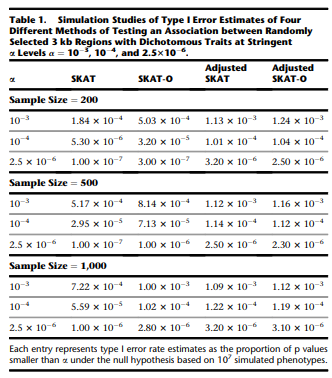
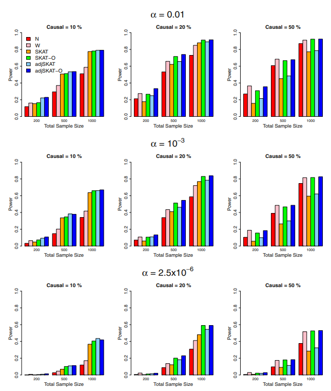
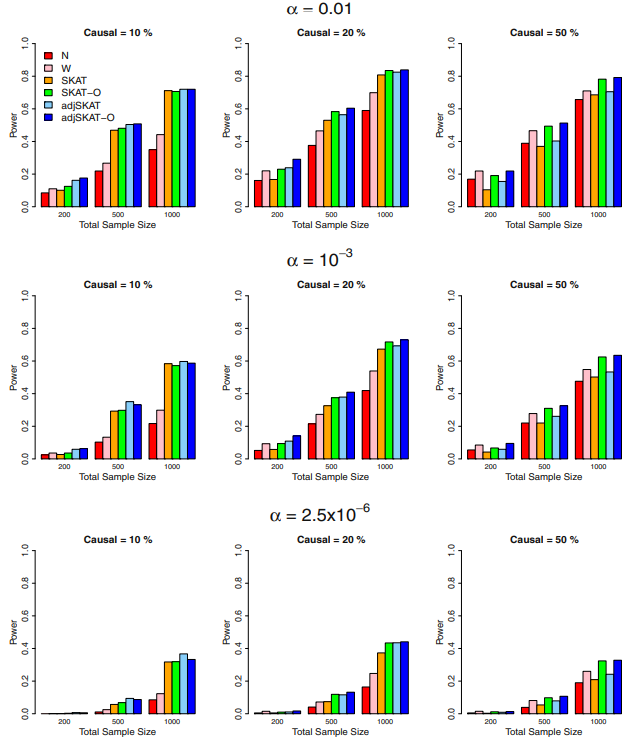
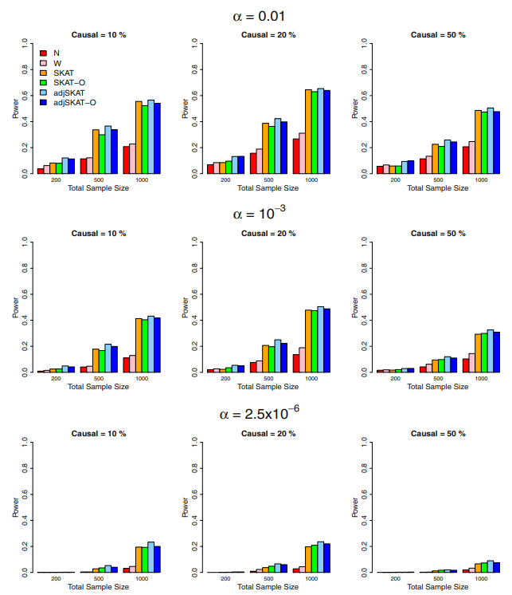
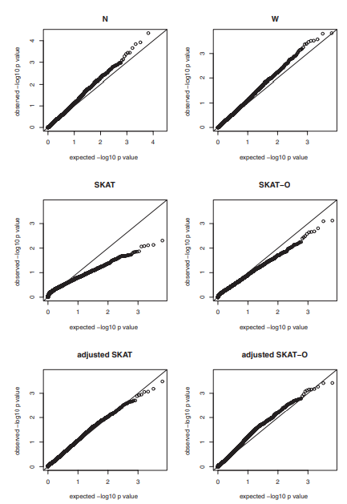

01. Review
Abstract
1 본 논문은 Sequencing association 연구에서 rare variants와 Phenotypes간의 association을 검정하기 위한 통합적 접근방법(unified approach)을 제안함.
\[Q_{\rho} = \rho Q_{B} + (1-\rho)Q_{S}\]
\(Q_{\rho}\):
SKAT-O의 검정통계량\(Q_{B}\):
Burden-test의 검정통계량\(Q_{S}\):
SKAT의 검정통계량\(\rho\): 각 변이의 회귀계수 \(\beta_j\)들 간의
상관계수
2 또한 이전 SKAT 방법에서 지적되었던 dichhotomous이고 표본 수가 적을 때 나타나는 Type 1 error를 보정하기 위한 Small-sample adjustment procedure를 개발함.
3 Small-sample adjusted SKAT와 SKAT-O는 모두 연산이 효율적이여서 GWAS에 쉽게 적용할 수 있음.
4 본 논문에서 많은 시뮬레이션을 통해 제안한 방법들을 평가했고, NHLBI Exome Sequencing Projcet의 급성 폐 손상(ALI) Exome Sequencing data를 활용하여, 실데이터에서의 활용도 입증했다…. 뭐 그런 이야기입니다.
Introduction
(1) Rare Variant의 등장
1 Array 기반 유전형 분석 기술은 많은 GWAS 연구에서 복합 질환과 관련된 1,000개 이상의 Common Variants를 발굴함.
2 최근 대용량 병렬 시퀀싱(NGS) 기술의 발전은 Human Genetic 연구를 변화시켰다.
3 특히, 희귀변이와 복잡한 질병 간의 연관성을 연구할 수 있는 많은 기회들을 제공함.
MAP가 0.01 ~ 0.05 미만인 희귀변이가
complex traits of etiology에서 중요한 역할을 할 수 있으며,Common variants들로는 설명되지 않는
Missing heritability를 설명할 수 있게됨.
4 NGS가 필수적인 이유는?
Microarray칩은 이미 알려진 Common SNP들 위주로
Probe가 설계되어 있어 새로운 희귀변이를 포착하지 못함.반면 NGS는 염기서열 전체를
Direct Sequencing하기 때문에 인구집단 내 빈도가 극ㅎ히 낮거나 개별 가계에만 존재하는 Novel rare Variant까지 발굴할 수 있음.
원문
“Array-based genotyping technologies have been used successfully in hundreds of genome-wide association studies in the last few years for identifying over one thousand common genetic variants associated with many complex diseases. The recent advance of massively parallel sequencing technologies has transformed human genetic research. These emerging sequencing technologies provide a rich opportunity to study the association between rare variants and complex traits. Rare variants, which have minor allele frequencies (MAFs) of less than 0.01~0.05, might play an important role in the etiology of complex traits and account for missing heritability unexplained by common variants. Several complex traits have been found to be associated with rare variants.”
(2) Single-Variant Test의 한계와 Gene-Level Aggregation의 필요성
1 Singl-Variant test은 일반적으로 Common Variant와 Phenotypes간의 연관성을 찾기위해 수행되지만,
2 Rare variant의 낮은 빈도로 인해 통계적 검정력이 거의 없음
3 대신 희귀변이 분석은 유전자와 같은 유전체 구역 또는 SNP 세트 내 희귀변이들의 누적 효과(Cumulative effects)를 검정하는데 집중되어 왔음.
4 이러한 검정법들은 크게 Burden과 Non Burden으로 분류됨.
5 즉, 희귀변이의 낮은 빈도라는 특성 문제를 해결하기 위해 희귀변이 신호를 묶어서 검정하는 방법인 burden과 Non-Burden이 도입된 것임.
원문
“In recent years, significant efforts have been devoted to developing powerful and computationally efficient statistical methods for testing associations between rare variants and complex traits. Single-variant tests are typically conducted to investigate associations of common variants and phenotypes; however the same approach has little power for testing for rare-variant effects because of their low frequencies and large numbers. Instead, the statistical development of rare-variant analysis has been focused on testing cumulative effects of rare variants in genetic regions or SNP sets, such as genes. These tests can be broadly classified as burden and nonburden tests.”*
(3) Burden test vs Non-Burden
1 Burden test는 genetic region내 희귀변이들을 단일 Burden 변수로 collapsing 한 후,
2 해당 Burden 변수에 대하여 phenotype을 regress해서 구역 내 희귀변이들의 누적 효과를 검정함.
3 그러나 Protective Variant나 Non-Causal Variant가 혼재될 경우, 동일 방향성 가정이 위배되어 검정력의 손실을 겪게됨
1 반면, SKAT는 SNP효과가 선형으로 모델링될 때 개별 변이의 Score 통계량을 가중치와 함께 집계함.
2 보다 일반적으로, SKAT는 커널 행렬을 통해 변이와 표현형간의 연관성을 집계하여 SNP간 상호작용, 즉 Epistatic Effect를 허용함.
3 SKAT는 Protective or deleterious Variant나 Non-Causal Variant가 모두 존재하거나 다수가 있을 때, 특히 강력함.
4 그러나 명확한 한계점들이 졵
희귀변이의 상당 비율이 실제로 원인변이이고, 동일한 방향으로 영향을 미치는 경우, Burden보다 검정력이 떨어짐.
또한, p-value deflation 문제 발생(
이 부분 따로 정리)
\[Q_{\text{burden}} =\left ( \sum w_j S_j \right )^2 \quad \text{vs} \quad Q_{\text{SKAT}} = \sum w_{j}^{2} S_{j}^{2}\]
\[S_j = \sum_{i=1}^n g_{ij} \left( y_i - \hat{\mu}_i \right)\]
기호 의미
\(w_j\) \(j\)번쨰 희귀변이에 부여되는 가중치
- \(w_j \sim \text{Beta}(\text{MAP}_j;, 1, 25)\)
\(S_j\): \(j\)번쨰 희귀변이에 대한
Score-statisic\(g_{ij}\): \(i\)번째 피험자가 보유한 \(j\)번째 희귀변이의 희귀 대립유전자 개수.(
0,1,2)
| 염색체1 | 염색체2 | Minor allele 수(\(g_{ij}\)) | 의미 |
|---|---|---|---|
| Major | Major | 0 | 희귀변이가 없음 |
| Major | Minor | 1 | 희귀변이를 1개 보유 |
| Minor | Major | 1 | 희귀변이를 1개 보유 |
| Minor | Minor | 2 | 희귀변이를 2개 보유 |
\(y_i\): \(i\)번째 핗럼자의 실제 관측된
Phenotypes\(\hat{\mu}_i\) (또는 \(\hat{\pi}_i\)): 귀무모형(Null Model) 하에서 예측된 \(i\)번째 피험자의 피노타입
- 귀무모형(Null Model)이란, 유전자 변이 효과가 전혀 없다(\(\beta = 0\))고 전제하고 나이, 성별, 인종(PC) 등 공변량(Covariates)만 투입하여 적합(Fit)시킨 회귀모형
\(\left( y_i - \hat{\mu}_i \right)\): 공변량으로 설명되고 남은 표현형의 잔차(Residual)
(4) SKAT-O & Small-Sample Adjustment
0 본 논문은 이전 방법론들의 문제점을 해결하고자 두 가지 목표를 가지고 출발함.
1 첫째, 검정력을 극대화하기 위한 Burden과 SKAT의 최적 선형 결합을 찾는 unified test를 제안함. (변이간 상관관계 활용)
- 구체적으로는 Burden test가 강력할 떈 Burden test처럼 작동하고, 반대의 경우에도 이와 동일하게 자동적으로 작용함.
2 둘째, 표본수가 적은 case-control에서도 SKAT 및 SKAT-O의 성능을 향상시킨다.
- 본 논문에서는
small-sample variance와Kurtosis를 정밀하게 추정하여 SKAT 및 SKAT-O에 대한analytic adjsutment method를 개발함. - 이를 통해 소표본에 대한
reference distribution을 정확히 계산하여Type 1 error를 적절하게 통제할 수 있도록 함.
Material and Methods
Sequence Kernel Association Test
1 유전자 내 \(m\)개의 희귀변이 각각에 독립된 회귀계수 (\(\beta_1, \beta_2, \dots, \beta_m\))를 부여한 자유도(\(m\)-df) 다중 로지스틱회귀모형.
\[\text{logit}(\pi_i) = \gamma_0 + \mathbf{X}_i' \gamma_1 + \mathbf{G}_i' \beta = \gamma_0 + \mathbf{X}_i' \gamma_1 + \sum_{j=1}^m g_{ij} \beta_j \quad \text{--- (Equation 1)}\]
2 이 모형에서 유전자가 질환과 연관이 없다는 귀무가설은 \(H_0: \beta_1 = \beta_2 = \dots = \beta_m = 0\) 이다.
3 하지만 유전자 하나에 관측되는 희귀변이 개수 \(m\)은 수십~수백 개에 달하는 반면,
4 각 변이의 빈도(MAF)는 극히 낮음. 따라서 \(m\)개의 파라미터를 동시에 검정하는 표준 \(m\)-df 검정법은 통계적 검정력(Power)이 급격히 무너짐.
1 Equation 1의 회귀계수들에 \(\beta_j = w_j \beta_c\)라는 제약 조건(가정)을 주어, \(m\)개의 개별 변수를 단 하나의 Burden 합성 변수로 압축한 자유도(1-df) 회귀모형.
\[\text{logit}(\pi_i) = \gamma_0 + \mathbf{X}_i' \gamma_1 + \beta_c \left( \sum_{j=1}^m w_j g_{ij} \right) \quad \text{--- (Equation 2)}\]
2 수식 내부의 \(\left( \sum_{j=1}^m w_j g_{ij} \right)\) 항은 \(i\)번째 피험자가 가진 희귀변이들을 가중 합산하여 만든 단 하나의 ‘Burden 변수(\(X_{i, \text{burden}}\))’ 역할
3 이 변환 덕분에 귀무가설이 기존의 \(H_0: \beta_1 = \dots = \beta_m = 0\) (\(m\)-df)에서, 단 하나의 파라미터에 대한 \(H_0: \beta_c = 0\) (1-df)으로 대폭 축소되어 검정력이 크게 상승.
4 Equation 2가 성립하려면 \(\beta_j = w_j \beta_c\)라는 전제가 반드시 참이어야 함.
- 즉, 모든 변이가 원인 변이(Causal)이고 효과 방향이 모두 동일해야 함.
- 만약 실제 유전자 내에 위험 변이(\(\beta_j > 0\))와 보호 변이(\(\beta_j < 0\))가 섞여 있거나 비원인 변이(\(\beta_j = 0\))가 많다면,
- Equation 1을 Equation 2로 변환하는 전제 자체가 파괴되어 신호 상쇄(Cancellation) 및 검정력 붕괴가 발생
\[\text{logit}(\pi_i) = \gamma_0 + X_i' \gamma_1 \quad \text{--- (Equation 3, Null Model)}\]
\[Q_B = \left[ \sum_{i=1}^n (y_i - \hat{\pi}_i) \sum_{j=1}^m w_j g_{ij} \right]^2 = \left( \sum_{j=1}^m w_j S_j \right)^2\quad \text{--- (Equation 4)}\]
Equation3 - 기호
- \(\pi_i = P(y_i = 1)\): \(i\)번째 피험자(Subject)가 질병에 걸릴(또는 특정 표현형을 가질) 예측 확률.
- \(\text{logit}(\pi_i)\): 로짓 변환 함수로, \(\log\left(\frac{\pi_i}{1 - \pi_i}\right)\) 즉 표현형이 나타날 승산(Odds)의 자연로그값.
- \(\gamma_0\): 귀무모형의 절편(Intercept) 상수항.
- \(X_i = (x_{i1}, x_{i2}, \dots, x_{is})'\): \(i\)번째 피험자가 가지는 \(s\)개의 공변량(Covariates) 벡터
- 예시: 나이, 성별, 인종 구조를 보정하기 위한 주성분(Principal Components, PCs) 등
- \(\gamma_1 = (\gamma_{11}, \dots, \gamma_{1s})'\): \(s\)개 공변량 각각에 대한 회귀계수 벡터.
- \(\hat{\pi}_i\): \(i\)번째 피험자의 기대 발병 확률값 (\(\hat{\pi}_i = \text{logit}^{-1}(\hat{\gamma}_0 + X_i' \hat{\gamma}_1)\))
Equation4 - 기호
\(Q_B\): 귀무가설 \(H_0: \beta_c = 0\) (유전자 내 Burden 효과가 0이다)을 검정하기 위한 Burden Score 통계량 (Burden Score Statistic)
\(n\): 연구에 포함된 전체 피험자(샘플) 수
\(m\): 분석 대상 유전자(또는 구역) 내에 존재하는 희귀변이(Rare variants)의 총 개수,
\(y_i\): \(i\)번째 피험자의 실제 관측된 표현형값(이분형 케이스-컨트롤 연구 기준: \(1\) = 환자군, \(0\) = 대조군)
\((y_i - \hat{\pi}_i)\): 실제 표현형값(\(y_i\))에서 공변량으로 설명되는 예측 확률(\(\hat{\pi}_i\))을 뺀 표현형 잔차(Residual)
- 의미: 나이, 성별 등 기저 공변량 효과를 선제적으로 제거하고 남아있는 순수 질병 연관 신호.
\(w_j\): \(j\)번째 희귀변이에 부여되는 가중치(Weight)
- 의미: 대립유전자 빈도(MAF)가 낮을수록 더 강한 생물학적 효과를 가질 것으로 예상하여 \(\text{Beta}(\text{MAF}_j; 1, 25)\) 등의 가중치 함수를 적용.
\(g_{ij}\): \(i\)번째 피험자가 보유한 \(j\)번째 희귀변이의 유전형 카운트(Genotype Value) (가산 유전 모형 기준: \(0, 1, 2\))
\(\sum_{j=1}^m w_j g_{ij}\): \(i\)번째 피험자가 보유한 희귀변이들을 가중 합산하여 단 하나로 집계한 합성 Burden 변수 (\(X_{i, \text{burden}}\))
\(S_j = \sum_{i=1}^n g_{ij} (y_i - \hat{\pi}_i)\): \(j\)번째 단일 희귀변이에 대한 개별 스코어 통계량 (Marginal Score Statistic)
- 의미: \(j\)번째 변이가 공변량이 보정된 잔차와 가지는 개별 연관 신호의 크기와 방향성을 나타냄.
1 SKAT은 변수를 합치지 않고 Equation 1의 개별 변수 형태 (\(\sum_{j=1}^m \beta_j g_{ij}\))를 그대로 유지하는 대신, 회귀계수 \(\beta_j\)에 확률분포 가정(Random Effect)을 부여
\[\text{logit}(\pi_i) = \gamma_0 + \mathbf{X}_i' \gamma_1 + \sum_{j=1}^m \beta_j g_{ij} \quad \text{where } \beta_j \sim \text{iid}(0, w_j^2 \tau)\]
2 핵심 가정 - \(\beta_j \sim \text{iid}(0, w_j^2 \tau)\) (각 변이의 회귀계수 \(\beta_j\)들은 서로 독립이며, 평균이 0이고 분산이 \(w_j^2 \tau\)인 임의의 확률분포를 따름) - 변이를 회귀식에서 합치지 않고 개별 변이 효과를 유지하되, 효과들의 공통 분산 성분인 \(\tau\)를 검정
3 검정 대상: \(H_0: \tau = 0\) (분산 성분 스코어 검정)
- 스코어 통계량 가중 합산식:
\[Q_S = \sum_{j=1}^m w_j^2 S_j^2 = \sum_{j=1}^m w_j^2 \left( \sum_{i=1}^n g_{ij} (y_i - \hat{\pi}_i) \right)^2 \quad \text{--- (Equation 6)}\]
Equation6 - 기호
\(Q_S\): 귀무가설 \(H_0: \tau = 0\) (유전자 내 변이 효과들의 분산 성분이 0이다)을 검정하기 위한 Burden Score 통계량 (Burden Score Statistic)
\(n\): 연구에 포함된 전체 피험자(샘플) 수
\(m\): 분석 대상 유전자(또는 구역) 내에 존재하는 희귀변이(Rare variants)의 총 개수,
\(y_i\): \(i\)번째 피험자의 실제 관측된 표현형값(이분형 케이스-컨트롤 연구 기준: \(1\) = 환자군, \(0\) = 대조군)
\((y_i - \hat{\pi}_i)\): 실제 표현형값(\(y_i\))에서 공변량으로 설명되는 예측 확률(\(\hat{\pi}_i\))을 뺀 표현형 잔차(Residual)
- 의미: 나이, 성별 등 기저 공변량 효과를 선제적으로 제거하고 남아있는 순수 질병 연관 신호.
\(w_j\): \(j\)번째 희귀변이에 부여되는 가중치(Weight)
- 의미: 대립유전자 빈도(MAF)가 낮을수록 더 강한 생물학적 효과를 가질 것으로 예상하여 \(\text{Beta}(\text{MAF}_j; 1, 25)\) 등의 가중치 함수를 적용.
\(g_{ij}\): \(i\)번째 피험자가 보유한 \(j\)번째 희귀변이의 유전형 카운트(Genotype Value) (가산 유전 모형 기준: \(0, 1, 2\))
\(S_j = \sum_{i=1}^n g_{ij} (y_i - \hat{\pi}_i)\): \(j\)번째 단일 희귀변이에 대한 개별 스코어 통계량 (Marginal Score Statistic)
- 의미: \(j\)번째 변이가 공변량이 보정된 잔차와 가지는 개별 연관 신호의 크기와 방향성을 나타냄.
1 Burden(\(Q_B\))과 SKAT(\(Q_S\))의 결정적 작동 차이.
Burden (\(Q_B\), Equation 4): 변이 유전형을 회귀 분석 전에 먼저 합산한 뒤 전체를 제곱함. (Sum-then-Square)
SKAT (\(Q_S\), Equation 6): 개별 변이 스코어 \(S_j\)를 먼저 각각 제곱(\(S_j^2\))하여 양수화한 후 합산. (Square-then-Sum)
- 의미: SKAT은 제곱을 먼저 취하기 때문에 효과 방향이 섞여 있거나 비원인 변이가 많아도 신호가 소멸하지 않고 강건하게 유지됨
2 SKAT의 가중치(\(w_j\)) 설정 및 대규모 표본 \(p\)-value 산출의 용이성
가중치 \(w_j\)는 대립유전자 빈도(MAF)에 기반한 Beta 분포 함수(\(\text{Beta}(\text{MAF}_j; 1, 25)\)) 또는 PolyPhen/SIFT 같은 기능성 예측 점수를 활용해 유연하게 설정할 수 있음,
귀무가설(\(H_0: \tau = 0\)) 하에서 \(Q_S\)는 카이제곱 혼합 분포(Mixture of Chi-squares)를 따르며, Davies 기법 등을 통해 순열 검정(Permutation) 없이 해석적(Analytic)으로 빠르게 \(p\)-value를 계산
3 SKAT의 한계 및 SKAT-O(Equation 7 & 8)로의 확장
SKAT의 한계: 변이 대부분이 원인 변이이고 단방향 효과를 가질 때는 변이를 뭉쳐서 검정하는 Burden test가 SKAT보다 검정력이 더 높음.
분석 전에는 특정 유전자가 Burden 전제에 맞는지, SKAT 전제에 맞는지 미리 알 수 없음.
SKAT-O 제안 (Equation 7 & 8): 저자는 두 통계량을 가중 결합한 \(Q_\rho = \rho Q_B + (1-\rho) Q_S\)를 제안하고, 데이터로부터 최적의 \(\rho\)를 찾아 두 방법의 장점을 모두 취하는
SKAT-O를 제안함.
Optimal Unified Association Test
1 앞서 논의한 바와 같이, 상황에 따라서 Burden과 SKAT중 절대적으로 우수하다고 말할 수 있는 것은 없음.
2 이에 따라 본 논문에서는 Burden과 SKAT를 모두 포함하는 Unified Test를 제안함.
\[Q_\rho = \rho Q_B + (1 - \rho) Q_S \quad (0 \le \rho \le 1) \quad \text{--- (Equation 7)}\]
기호
- \(Q_\rho\): 가중치 파라미터 \(\rho\)에 의해 정의되는 통합 검정통계량 (Unified Test Statistic)
- \(Q_B\): Burden Score 통계량 (\(\left(\sum w_j S_j\right)^2\), Equation 4)
- \(Q_S\): SKAT Score 통계량 (\(\sum w_j^2 S_j^2\), Equation 6)
- $$14: Burden test와 SKAT 사이의 비중을 조절하는 믹싱 가중치(Mixing Parameter)
- \(\rho = 0 \implies Q_{\rho=0} = Q_S\): 순수 SKAT
- \(\rho = 1 \implies Q_{\rho=1} = Q_B\): 순수 Burden Test
3 나아가 이 통합 검정(Equation 7)은, Equation 1의 회귀계수 \(\beta_j\)들이 평균 0, 분산 \(w_j^2 \tau\)를 따르고 서로 다른 \(\beta_j\)들 사이에,
4 Pairwise Correlation \(\rho\)를 갖는다고 가정할 때 유도되는 분산 성분 스코어 통계량인 ‘확장된 SKAT(Generalized SKAT)’ 검정과 수학적으로 동치임(흠, 이건 뭔소린지 모르겠음)
\[Q_\rho = (y - \hat{\pi})' K_\rho (y - \hat{\pi}) \quad \text{--- (Equation 8)}\]
\[\text{where } K_\rho = G W R_\rho W G', \quad R_\rho = (1 - \rho) I + \rho \mathbf{1} \mathbf{1}'\]
5 실제로는 최적 가중치 \(\rho\)를 알 수 없으므로 검정력을 최대화 하기 위해 데이터로부터 추정해야함.
6 이러한 The optimal-unified-test statistic은 can be easily obtained through the simple grid search
\[Q_{\text{optimal}} = \min_{0 \le \rho \le 1} p_\rho \quad \text{--- (Equation 9)}\]
\[\text{Grid Search: } 0 = \rho_1 < \rho_2 < \dots < \rho_b = 1 \implies Q_{\text{optimal}} = \min \left\{ p_{\rho_1}, p_{\rho_2}, \dots, p_{\rho_b} \right\}\]
실행 알고리즘
\(\rho\)의 범위를 \(0\)부터 \(1\)까지 11개의 그리드 지점(\(\rho = 0, 0.01, 0.04, 0.09, 0.16, 0.25, 0.5, \dots, 1.0\))으로 나눈다.
각 \(\rho_k\) 지점마다 계산된 \(Q_{\rho_k}\) 통계량에 대해 각각의 \(p\)-value (\(p_{\rho_k}\))를 구함.
가장 작은 \(p\)-value를 주는 지점(\(Q_{\text{optimal}}\))을 선택.
<1D Numerical Integration>
최소 \(p\)-value를 선택하는 과정에서 탐색에 따른 다중 비교 편향(Multiple testing bias)이 발생하므로
Lee et al. (2012)은 \(Q_\rho\)를 두 카이제곱 변수의 혼합 분포로 분해한 뒤 1-dimensional Numerical Integration을 유도하여
보정된 최종 Exact \(p\)-value를 매우 빠른 연산속도로 산출함.
본 논문의 저자들은 이것을
The optimal unified test라고 하며 \(\to\) SKAT라고 칭함.
Small-Sample Optimal Unified Test
(흠…. 여기부터는 이해가 잘 안갑니다…)
앞선 방식들의 문제점 (p-value)
1 SKAT 및 SKAT-O는 Permutation 없이 카이제곰 분포를 통해 p-value를 빠르게 계산함.
2 그러나 Binary trait & 표본 수가 적을 경우, 기존 점근적 공식은 p-value가 실제보다 너무 크게 산출되어 Type 1 Error control and Power loss가 발생
3 수학적으로 생각하면…..
Genotype Matrix \(\bf{G}\)가
sparse할 경우, 귀무가설 하에서 검정통계량 \(Q_{s}\)의 Small-sample variance가 asymptotic보다 훨씬 작아짐 (뭔 소리인지….?)그래서 논문 저자들은 \(H_0\)하에서 \(Q_s\)의 평균과 분산을 새로운 방법으로 유도함.
Notation(소표본 평균 및 분산 수식)
\[\mathbb{E}[Q_S \mid U, L, \pi] = \sum_{j=1}^q \lambda_j, \quad \text{Var}[Q_S \mid U, L, \pi] = \sum_{j=1}^q \sum_{k=1}^q \lambda_j \lambda_k c_{jk} \quad \text{--- (Equation 10)} \]
\[\text{where}\quad c_{jk} = \sum_{i=1}^n u_{ij}^2 u_{ik}^2 \frac{3\pi_i^2 - 3\pi_i + 1}{\pi_i(1-\pi_i)} + \sum_{i_1 \neq i_2} u_{i1j}^2 u_{i2k}^2 + 2 \sum_{i_1 \neq i_2} u_{i1j} u_{i2j} u_{i1k} u_{i2k} - \text{Appendix A}\]
기호
1 \(D = \text{diag}\{\pi_i(1-\pi_i)\}\): 귀무모형 하에서 각 피험자의 발병 예측 확률
2 \(\pi_i\)로 구성된 대각 행렬.\(\tilde{K} = D^{1/2} K D^{1/2}\): 조정된 커널 행렬.
3 \(\lambda_1, \dots, \lambda_q\): \(\tilde{K}\)의 0이 아닌 고유값(Eigenvalues) 대각 행렬 \(L\).
4 \(U = [u_1, \dots, u_q]\): \(\tilde{K}\)의 고유벡터(Eigenvectors) 행렬 (\(u_{ij}\)는 \(j\)번째 고유벡터의 \(i\)번째 요소).
5 \(c_{jk}\): 소표본 모멘트 보정 계수
\(\divideontimes\) 핵심은 소표본 평균(\(\mathbb{E}[Q_S]\))은 점근적 평균과 동일하지만, 소표본 분산(\(\text{Var}[Q_S]\))은 보정 계수 \(c_{jk}\)가 곱해져 점근적 분산과 완전히 달라진다고 합니다…..
p-value 계산
산출된 소표본 모멘트(\(\mu_Q, v_Q\))를 바탕으로 카이제곱 분포의 자유도(\(df\))를 모멘트 매칭(Moment Matching)으로 수정하여 정밀한 \(p\)-value를 계산
\[p\text{-value} = 1 - F\left( \frac{Q_S - \mu_Q}{\sqrt{v_Q}} \sqrt{2 \cdot df} + df \;\Big|\; \chi^2_{df} \right) \quad \text{--- (Equation 11)}\]
구성 요소: - \(\mu_Q = \sum_{j=1}^q \lambda_j\) (소표본 평균)
\(v_Q = \sum_{i,j=1}^q \lambda_i \lambda_j \hat{c}_{ij}\) (소표본 분산)
수정 자유도 \(df = \frac{\left(\sum \lambda_j^*\right)^2}{\sum \lambda_j^{*4}} \quad \left(\text{단, } \lambda_j^* = \lambda_j \frac{\sqrt{\hat{c}_{jj}}}{\sqrt{2}}\right)\)
SKAT-O에도 적용
1 이 소표본 분산 보정 알고리즘은 SKAT(\(Q_S\))에만 국한되지 않고 SKAT-O(\(Q_\rho\))에도 동일하게 확장
2 또한 본 논문에서 제안한 Small-sample adjustment procedure은 커널 행렬 \(\bf{K}\)가 반드시 linear weighted kernel이라는 제약을 두지 않고,
3 IBS(Identity-By-State)커널 및 가중 IBS커널을 포함한 모든 커널 행렬에 적용할 수 있다고 합니다….
Small-Sample SKAT and Unified Test with Higher Moments Adjustments
1 이전 섹션 Equations 10 & 11에서 한 단계 더 나아가,
2 샘플 수가 \(n=88\) 수준으로 극단적으로 적을 때 발생하는 Type 1 error rate을 잡기 위해
3 4차 모멘트인 Kurtosis를 추가 교정하는 알고리즘을 다룸.
4 \(Q_S\)의 첨도를 분석적 수식으로 유도하는 것은 어려워, 리샘플링 기법을 통해 표본 첨도를 추정하는 방법을 제안함.
No Covariate: 단순 선열 검정
1 나이, 성별 등 보정할 공변량이 없는 경우에는 \(y\)를 \(B\)번 단순 Permutation하여 표본을 생성
2 \(b\)번째 순열 표본 \(y^*_b\) (\(b = 1, \dots, B\))로부터 얻은 SKAT 통계량을 \(Q^*_{s;b}\)라 할 때, 표본 첨도(\(\hat{\gamma}\))는 다음과 같이 산출됨.
\[\hat{\gamma} = \frac{\hat{m}_4}{\hat{s}^4} - 3\]
\[\text{where } \hat{m}_4 = \frac{1}{B} \sum_{b=1}^B \left( Q^*_{s;b} - \mu_Q \right)^4, \quad \hat{s}^2 = \frac{1}{B} \sum_{b=1}^B \left( Q^*_{s;b} - \mu_Q \right)^2\]
(단, \(\mu_Q\)는 \(Q_S\)의 기대값)
3 추정된 표본 첨도 \(\hat{\gamma}\)를 이용하여 카이제곱 혼합 분포의 자유도(\(\widehat{df}\))를 다음과 같이 수정
\[\widehat{df} = \frac{12}{\hat{\gamma}}\]
4 이렇게 수정된 자유도 \(\widehat{df}\)를 Equation 11 수식의 \(\chi^2_{\widehat{df}}\) 분포식에 대입하여 최종 보정된 \(p\)-value를 계산
\[p\text{-value} = 1 - F\left( \frac{Q_S - \mu_Q}{\sqrt{v_Q}} \sqrt{2 \cdot df} + df \;\Big|\; \chi^2_{df} \right) \quad \text{--- (Equation 11)}\]
Covariate가 존재하는 경우
1 공변량을 보정해야 하는 실제 연구에서는 단순 Permutation을 사용할 수 없음.
2 대신 Parametric Bootstrap을 사용하여 리샘플링을 수행
3 세부 절차
귀무모형(Null Model) 하에서 공변량만으로 각 피험자의 발병 확률 \(\pi_i\)를 먼저 추정한 후,
이를 확률값으로 사용하여 원래 데이터와 동일한 환자(Case) 및 대조군(Control) 수를 유지하는 부트스트랩 표현형 \(y^*_b\)를 생성
생성된 부트스트랩 표본으로부터 표본 첨도 \(\hat{\gamma}\)를 추정하고 자유도 \(\widehat{df} = 12/\hat{\gamma}\)를 수정하여 동일하게 Equation 11로 \(p\)-value를 계산
Computation-Time Advantage
1 기존 Whole-Exome Sequencing 연구에서는 다중 비교 보정을 위해 \(10^{-5} \sim 10^{-6}\) 수준의 유의수준에서 \(p\)-value를 산출해야 했음.
2 기존처럼 \(Q^*_{s;b} > Q_S\)인 비율로 \(p\)-value를 직접 세어내려면 유전자 1개당 \(10^7 \sim 10^8\)번 이상의 순열 또는 부트스트랩이 필요하여 연산이 불가능에 가까웠다.
3 본 논문에서 제안한 부트스트랩은 \(p\)-value를 직접 세는 것이 아니라, 오직 고차 모멘트(첨도 \(\hat{\gamma}\)) 하나만 안정적으로 추정하는 목적이므로 단 \(10,000\)번의 부트스트랩이면 충분함.
4 가장 결정적인 핵심은 귀무모형(Null Model)은 오직 공변량(\(X\))만으로 적합되므로 모든 유전자에서 완벽히 동일
5 따라서 귀무모형 하에서 생성된 10,000개의 부트스트랩 표현형 표본(\(y^*_b\))을 전장 엑솜 20,000개 모든 유전자에 단 한 번 생성하여 재사용(Re-use)할 수 있다.
6 이를 통해 유전자별 반복 계산 없이 전체 엑솜 분석의 연산 시간을 획기적으로 단축할 수 있다는 이야기…
Numerical Simulations
저자들은 이분형(Binary/Case-Control) 형질 환경에서 소표본 보정법과 SKAT-O의 성능을 검증하기 위해 유럽인 선조 데이터 기반의 COSI 합체 모형(Coalescent model)으로 생성된 10,000개 염색체에서 무작위 추출한 3 kb 유전 구역을 대상으로 대규모 시뮬레이션을 수행함
시뮬레이션 설정 및 비교 대상 방법론
📌 기본 모형 설정
1 표본 크기: 총 \(n = 200, 500, 1,000\) 명 (케이스 50%, 컨트롤 50%)
2 Null Model: \(\text{logit}(\pi_i) = \gamma_0 + 0.5 X_{1i} + 0.5 X_{2i}\)
\(X_1 \sim N(0, 1)\) (연속형 공변량), \(X_2 \sim \text{Bernoulli}(0.5)\) (이분형 공변량)
기저 질환 유병률(Prevalence) = 1% (\(\gamma_0\)로 조절)
3 Alternative Model: \(\text{logit}(\pi_i) = \gamma_0 + 0.5 X_{1i} + 0.5 X_{2i} + \beta_1 g_{i1} + \dots + \beta_s g_{is}\)
원인 변이는 MAF < 3% 희귀변이 중에서 선택.
회귀계수 크기: \(|\beta_j| = c |\log_{10}(p_j)| / 2\) (MAF \(p_j\)가 작을수록 효과 크기가 커지도록 설정)
- \(p_j\) was the MAF of the \(j^{th}\) variant
📌 비교 분석한 6가지 방법론
1 \(N\) (Counting Burden Test): MAF < 3% 희귀변이 개수 단순 합산 (Flat weight)
2 \(W\) (Weighted Burden Test): \(\text{Beta}(\text{MAF}; 1, 25)\) 가중치 적용 Burden test
3 SKAT: 기존 점근적(Asymptotic) SKAT (소표본 미보정)
4 SKAT-O: 기존 점근적 SKAT-O (소표본 미보정)
5 Adjusted SKAT: 소표본 분산 및 첨도(Kurtosis) 보정 적용 SKAT
6 Adjusted SKAT-O: 소표본 분산 및 첨도 보정 적용 SKAT-O
Type I Error Simulations
📌 검증 방식
1 전장 엑솜 유의수준인 \(\alpha = 2.5 \times 10^{-6}\) (20,000개 유전자 보정 Bonferroni-level \(\alpha=0.05\) 수준) 및 \(\alpha = 10^{-3}, 10^{-4}\)에서의 통제력을 확인하기 위해,
2 20,000개 유전형 세트 \(\times\) 500개, 표현형 세트 = 총 \(10^7\) (1,000만)개의 시뮬레이션 표본을 생성하여 평가 (Table 1).
3 주요결과1: SKAT and SKAT-O had substantially deflated Type 1 error rate for small sample sizes
4 주요결과2: Both the proposed small-sample-adjusted SKAT and the unified test (adjusted SKAT and adjusted SKAT-O) performed much better than their unadjusted counterparts in small samples.
- They controlled type I error rates accurately over all sample sizes and all significance levels.

Power Simulation Results
📌 Power Simulation 실험 설정
1 분석 대상 구역: COSI 모형으로 생성된 3 kb 유전 구역 (샘플 크기 \(n=200, 500, 1,000\)에 따라 평균 20~40개의 변이가 관측됨)
2 원인 변이 조건: MAF < 3%인 희귀변이 중 일부를 Causal Variants로 지정
3 효과 크기 (Odds Ratio): MAF(\(p_j\))가 작을수록 효과 크기가 커지도록 \(|\beta_j| = c |\log_{10}(p_j)| / 2\) 로 설정
📌 비교 분석한 6가지 방법론
1 \(N\) (Counting Burden Test): MAF < 3% 희귀변이 개수 단순 합산 (Flat weight)
2 \(W\) (Weighted Burden Test): \(\text{Beta}(\text{MAF}; 1, 25)\) 가중치 적용 Burden test
3 SKAT: 기존 점근적(Asymptotic) SKAT (소표본 미보정)
4 SKAT-O: 기존 점근적 SKAT-O (소표본 미보정)
5 Adjusted SKAT: 소표본 분산 및 첨도(Kurtosis) 보정 적용 SKAT
6 Adjusted SKAT-O: 소표본 분산 및 첨도 보정 적용 SKAT-O
원인 변이의 효과 방향이 모두 동일(단방향)한 상태에서 원인 변이 비율(10%, 20%, 50%)에 따른 검정력 비교

조건: 질병 위험을 높이는 변이와 낮추는 보호 변이가 섞여 있는 혼합 효과(Mixed effects) 상황 (20% Protective / 80% Deleterious)

조건: 양방향 변이 효과가 완전히 1:1로 섞인 극단적 혼합 구조

조건: 급성 폐 손상(ALI) 환자 \(n=88\)명의 6,488개 유전자 엑솜 데이터 분석
x축: expected \(p\)-value
y축: 관측 \(p\)-value

한계점?
1 변이 100%가 원인 변이이고 모두 동일한 방향(100% Deleterious)을 가지는 극단적 상황에서는 이론적으로 \(\rho = 1\)인 Burden test(\(W\))가 가장 우수
SKAT-O는 분석 전에 이 구조를 알 수 없으므로 \(\rho \in\)
그리드 전체를 탐색(\(Q_{\text{optimal}} = \min p_\rho\))이 과정에서 발생하는 Search penalty로 인해, 100% burden 환경에서는
순수 Burden test보다 검정력이 아주 미세하게 낮음(근데 뭐 그 차이는 매우 작다고 합니다.)
2 시뮬레이션 설정에 따른 결과의 의존성.
저자들은 **“본 논문의 시뮬레이션 결과는 우리가 설정한 유전적 조건(3 kb 구역, MAF < 3%, 특정 Odds Ratio 함수 등)하에서 얻어진 것이므로,
연구 결과의 비교를 해석할 때는 우리가 고려한 시뮬레이션 설정 범위 내로 한정하여 해석해야한다고 주의를 남김 (discussion 파트에서 저자들이 인정한 부분)
3 논문에서 제시한 소표본 분산 및 첨도 보정 수식(Equations 10 & 11)은 표현형 잔차의 이분형 특성과 유전형 행렬의 희소성(Sparsity)으로 인해 발생하는 \(p\)-value Deflation을 잡기 위해 이분형(Dichotomous) 형질에 맞춰 유도됨.
연속형(Quantitative) 형질의 경우 정규성(Normality) 가정이 충족되면 소표본 보정이 필요 없다고 명시하였으나,
실제 데이터에서 정규성이 심하게 깨지거나 Outlier가 존재하는 연속형 형질에 대해서는 추가적인 검증이 필요할 수 있음.